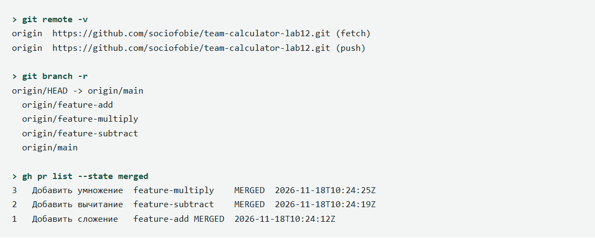
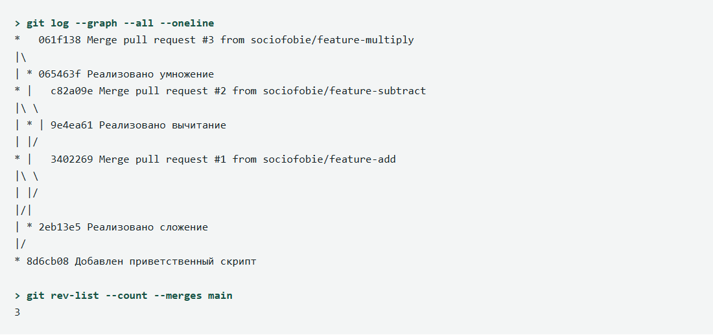

№12. Ветки и pull request в GitHub
В проекте team-calculator-lab12 каждая из трёх арифметических функций разработана в отдельной ветке. Работа выполнена индивидуально из трёх клонов под аккаунтом sociofobie. Все три запроса на слияние приняты в main. Отдельного ревью одногруппниками не проводилось.
Репозиторий на GitHub · Три слитых pull request. Для просмотра в браузере нужен вход в аккаунт с доступом к приватному репозиторию.
| Роль | Ветка | Функция | Коммит | Слияние |
|---|
| 1 | feature-add | Сложение | 2eb13e5 | PR #1 |
| 2 | feature-subtract | Вычитание | 9e4ea61 | PR #2 |
| 3 | feature-multiply | Умножение | 065463f | PR #3 |
Как выполнена работа
- Создан приватный репозиторий. Команда
git clone https://github.com/sociofobie/team-calculator-lab12.git role1 создала первый клон. Файл hello.py добавлен через git add hello.py, зафиксирован через git commit и отправлен командой git push -u origin main. После этого созданы клоны role2 и role3.
- В каждом клоне от начального коммита создана отдельная ветка. Пример для вычитания, выполненный из второй копии:
git switch -c feature-subtract
# После написания subtract.py
python -B -c "from subtract import subtract; assert subtract(2,3) == -1"
git add subtract.py
git commit -m "Реализовано вычитание"
git push -u origin feature-subtract
- На каждую опубликованную ветку открыт запрос в
main с помощью gh pr create. До слияния изменения просмотрены через gh pr diff. Команда gh pr merge 2 --merge, например, объединила ветку вычитания с основной на GitHub. Каждая ветка добавляла отдельный файл, конфликтов не возникло.
- Во всех трёх копиях выполнены
git switch main и git pull --ff-only. В истории видны три коммита слияния; исходные ветки сохранены. Затем в репозиторий добавлены этот отчёт и снимки вывода команд.

Общий репозиторий, ветки на GitHub и принятые запросы.

Граф сразу после слияния третьего PR, до добавления отчёта.
Что показать преподавателю
Откройте Files changed в PR #2 и покажите две строки в subtract.py. На вкладке Conversation видны исходная ветка, направление слияния и статус Merged. Затем откройте PowerShell в папке рабочего клона и выполните:
git status --short --branch
git remote -v
git branch -a
git log --graph --decorate --oneline --all
git show origin/feature-subtract -- subtract.py
git rev-list --count --merges main
python -B -c "from add import add; from subtract import subtract; from multiply import multiply; print(add(2,3), subtract(7,4), multiply(3,4))"
Счётчик слияний выдаёт 3, калькулятор выводит 5 3 12. Для демонстрации клонирования на новом компьютере с доступом к репозиторию:
git clone https://github.com/sociofobie/team-calculator-lab12.git demo
cd demo
git log --oneline --merges
Что отвечать на защите
- Для чего нужна система контроля версий?
- «Git сохраняет снимки проекта и историю изменений. Я могу узнать, в каком коммите появилась функция, сравнить две версии, восстановить нужное состояние и объединить работу нескольких веток».
- Чем отличаются локальный и удалённый репозитории?
- «В рабочем клоне я редактирую файлы и делаю коммиты. Общий репозиторий служит точкой обмена. Имя
origin — ссылка на него. Здесь origin указывает на приватный репозиторий GitHub. clone получает копию, push отправляет коммиты, pull получает и интегрирует изменения».
- Зачем нужны ветки?
- «Ветка — перемещаемый указатель на коммит.
git switch -c feature-add создаёт ветку и переключает на неё. В ней можно разработать и проверить сложение, пока основная ветка остаётся на своей версии».
- Как выполняется слияние и что делать при конфликте?
- «Перехожу в принимающую ветку командой
git switch main и запускаю git merge имя-ветки. Если Git сообщает конфликт, смотрю git status, согласую итоговый текст в файле, удаляю маркеры конфликта, проверяю результат, выполняю git add для исправленного файла и git commit».
- Что такое pull request?
- «Это запрос на включение одной ветки в другую на GitHub или аналогичном сервисе. Автор отправляет ветку через
push, открывает PR в main, коллега смотрит разницу, обсуждает изменения и одобряет слияние. В локальной работе я показал само слияние командой git merge».
- Как вести историю коммитов?
- «Один коммит должен содержать одно законченное изменение. Перед коммитом проверяю
git status и git diff --staged. По сообщению должно быть понятно, что изменилось. Здесь коммит “Реализовано вычитание” добавляет один модуль subtract.py».